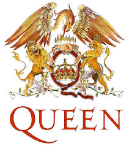

Tagok
Albumok
Freddie után
A Queen bemutatása
Az 1971-ben alakult együttes még abban az évben kis szerencsével demókat vehetett fel a De Lane Lea Studiosban,
cserébe a hangrendszer teszteléséért. A felvételek alatt figyelt fel rájuk Roy Baker és John Anthony, a Trident Studios két producere,
és elvitték a demó egy példányát. A Trident vezetőségének is tetszett az anyag,
ezért felajánlották az együttesnek, hogy ha éppen más előadó nem használja a stúdiót, akkor felvehetik ott a dalaikat.
A felvételek majd egy évig húzódtak, Freddie Mercury énekes és Brian May gitáros hozták az előre megírt dalaikat,
és Bakerrel közösen kialakították az együttesre később évekig jellemző stílust: a többszólamú, erőteljes énekkel, a bonyolult felépítésű,
gyakran többtételes dalokkal és a rétegezett gitárhangzással.
A rocktörténetben kevés együttesnek adatott meg, hogy 21 éven keresztül, tagcsere nélkül, folyamatosan ott legyen a rock élvonalában, a királynőket megillető helyen:
a trónon. Ám, hogy ilyen is lehetséges arra a legjobb példa az angolok második számú királynője a Queen.
A zenekar története 1971-ben kezdődött, amikor az alapítótagok még külön játszottak. Freddie Mercury egy Wreckage
nevű formációban próbálgatta a hangját, Brian May és Roger Taylor a Smile-ban tevékenykedett.
Amikor a három zenész egymásra talált, már tudták, hogy lesz valami ebből a bandából, de még nem volt basszusgitárosuk.
A legegyszerűbb és legmegszokottabb módszert választották: hírdetést adtak fel egy szaklapban.
A jelentkező John Deacon mindannyiuknak tetszett és így 1972-re végleges felállással létrejött az együttes,
amely a Queen nevet vette fel (a Queen szó az angol szlengben női szerepet játszó homoszexuális férfit is jelent).